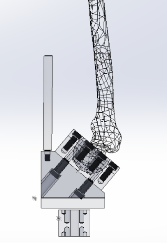
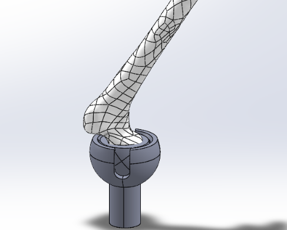
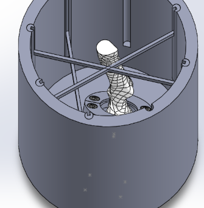
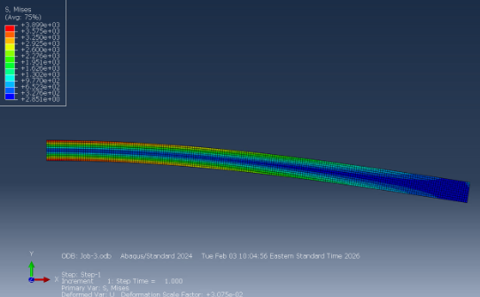

A Test Rig for Predicting Femur Fracture in Osseointegrated Implants
Bone-anchored prosthetics restore natural load transfer to the skeleton. The open question is how much load the remaining femur can take before it breaks. My Master's thesis focused on designing a standard fixture to investigate this.

Problem Statement
In osseointegration, a titanium implant is anchored directly into the residual femur and passes through the skin to connect to an external prosthesis. A option with growing popularity as it eliminates the challenges that make traditional limb prostheses hard to live with.
But routing load straight into the bone changes the mechanics of the femur. Stress concentrates around the implant, and periprosthetic fracture is a recognized complication — one that requires revision surgery and can jeopardize the implant entirely. Clinicians need to know how much load a given patient's femur can safely carry, and that answer depends on bone quality, implant geometry, and how deep the stem sits.
Answering it experimentally requires applying physiologically realistic loads to an instrumented femur–implant construct and recording where and when it fails. There is no off-the-shelf fixture that does this. Working with the Shefelbine Lab at Northeastern University, I have design and built one.
The Design Requirements
A fixture for this test has to satisfy several constraints at once:
Physiological loading
Reproduce the load direction and magnitude the femur sees in gait.
Moment at the femoral head
Simply rigidly constraining the femoral head would cause the femur to break along the shaft. I needed to design a fixture that allowed hip-like rotation.
Structural Integrity
The rig must be stiff enough that measured deflection comes from the specimen, not from the fixture flexing.
Adjustable alignment
Specimen-to-specimen variation has to come from the bone, so mounting and alignment must be constrained the same way every time.
Fits the load frame
Bounded by the working envelope and mounting interface of the lab's existing testing machine.
Survives failure
Fracture releases stored energy suddenly. The fixture has to contain that and remain reusable.
Iterating Toward a Working Fixture
The rig is on its third major revision. Each iteration has been driven by a specific limitation found in the one before it. I have summarized the major design challenges and the analysis preformed to solve them.
Constraining the femoral head
Inital brainstorming brought me to exploring hip implant life cycle testers and various other biomechanical test rigs. However, these fixtures completely fixing the femoral head using Polymethyl methacrylate (PMMA) or bone cement. This method could not be used with this test rig as it would create a moment around the shaft of the femur and cause it to break there. Diagram
The solution was to first mount the femoral head in a acetabular cup and emmulate a ball-and-socket type of fixture. Distributing the force from the femoral head through the rest of the bone. To further replicate the natural forces on the femur the assembly was angled at DEGREES.
Muscle Attachments
POSTS UGH
Adjustability
HOLES UGH
Machineability and Structural Integrity
A major priority of this project was to design a machineable structure that could withstand bone-crushing forces while also being cost-effective. For these reasons, steel GRADE was chosen and designs were centered around minimizing material and need for complex operations during manufacturing.



Strucural Analysis
Finite Element Analysis
To verify the structural integrity of the test fixture I used ABAQUS to preform a finite element analysis (FEA). Given we do not know the exact force needed to break a femur with an osseointegrated prosthetic, we estimated that the fixture would need to withstand forces of at least greater than 5000 N.
I created and analysed the finite element model of the muscle attachment tower and yoke. Results of the FEA showed that the structure was all good.
<Current Status & Next Steps
Testing on a cadaver femur
I will test the strucure using a cadaver femur in Feburary 2027. The results of this testing will be posted here as these become available.
Writing and Defending my master's thesis
Following testing with the femur I will write my master's thesis and submit it for publication to Northeastern's research database. I will also defend my thesis in a presentation to Northeastern faculty in the spring.